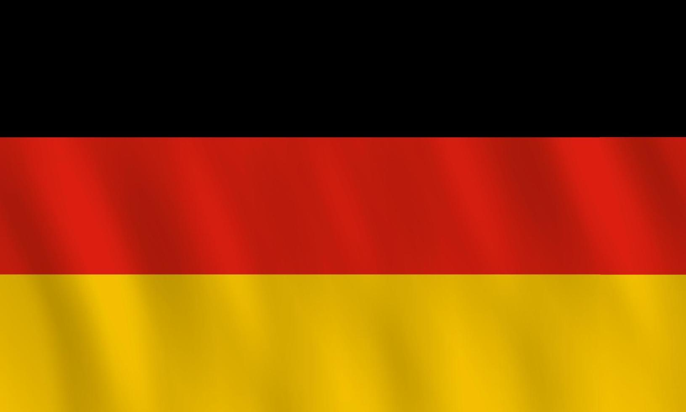

A Alemanha é o berço de muitas das tradições pascoais modernas, inclusive a figura do próprio Coelhinho da Páscoa ("Osterhase"), que surgiu em contos alemães antigos como um juiz que avaliava se as crianças haviam sido boas para receberem doces. Uma das tradições mais visuais e encantadoras do país é o "Osterbaum" (Árvore de Páscoa), que consiste em decorar os galhos secos das árvores com ovos coloridos, simbolizando a chegada da primavera e o fim do inverno.
Além das árvores enfeitadas, os alemães mantêm a tradição das fogueiras de Páscoa ("Osterfeuer"). Na noite de sábado para o domingo de Páscoa, as comunidades se reúnem para acender imensas fogueiras, uma prática pagã antiga adotada pelo cristianismo que serve para "queimar" o inverno e iluminar o caminho para a renovação da vida. As pessoas cantam, bebem e celebram em torno do fogo.
A culinária também desempenha um papel importante. Na Quinta-feira Santa, conhecida como "Gründonnerstag" (Quinta-feira Verde), é costume comer pratos verdes, como sopas de ervas ou espinafre. Já no domingo, as famílias desfrutam de um grande brunch e assam bolos e pães em formato de cordeiro, o "Osterlamm", coberto de açúcar de confeiteiro, acompanhando o clássico café alemão da tarde.